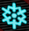
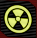
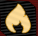
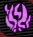

Requisitos:
Tener el PaP, abierto.
Tendremos que disparar a 10 pierdras que expulsan humo de color y hacer que desaparezcan.
Cada color, representa una AAT(segunda mejora del arma) del PaP.
Todas las AAT con su color:
Criogénica (Un copo de nieve)
Radioactiva (Símbolo de radiación)
Incendiaria (Una llama)
Roñosa (Símbolo violeta)
Conmoción (Un rayo)